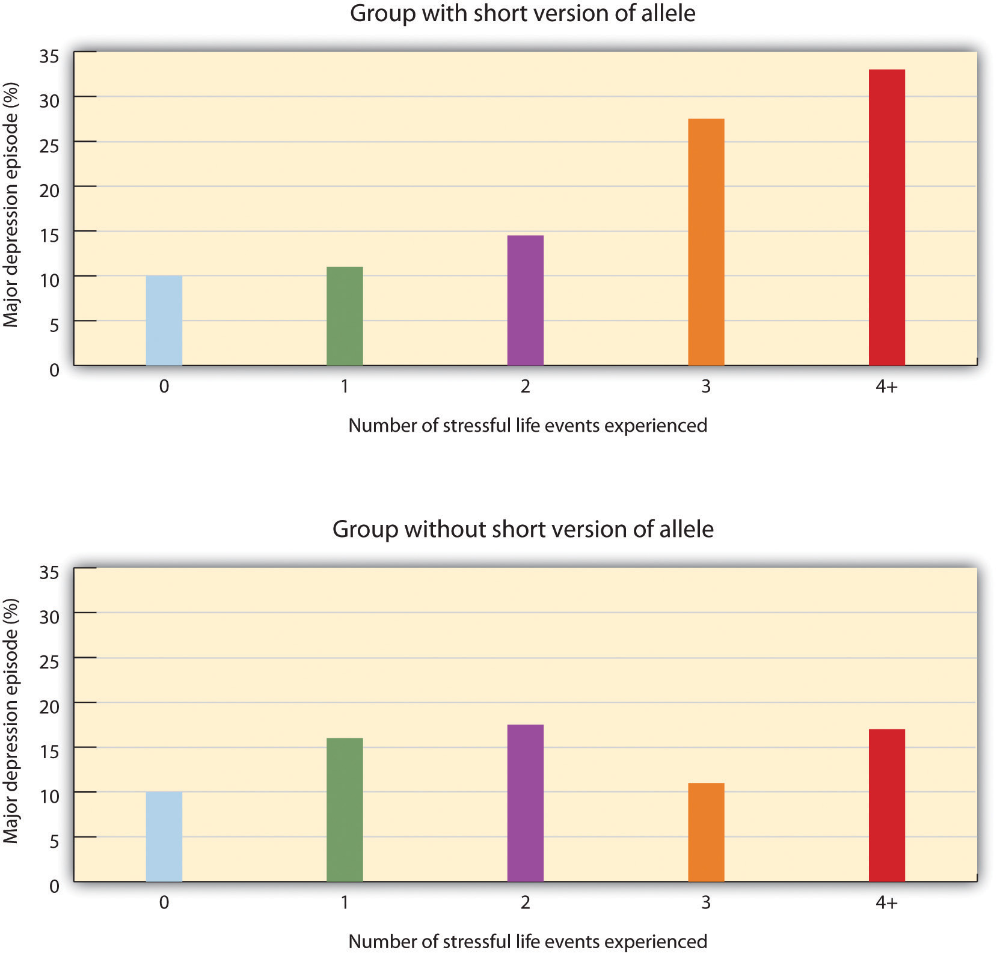
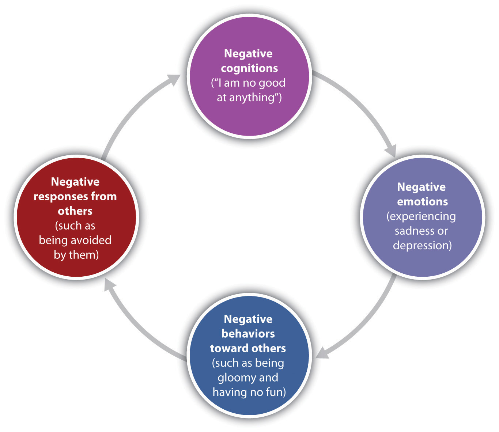

The everyday variations in our feelings of happiness and sadness reflect our moodThe positive or negative feelings that are in the background of our everyday experiences., which can be defined as the positive or negative feelings that are in the background of our everyday experiences. In most cases we are in a relatively good mood, and this positive mood has some positive consequences—it encourages us to do what needs to be done and to make the most of the situations we are in (Isen, 2003).Isen, A. M. (2003). Positive affect as a source of human strength. In J. Aspinall, A psychology of human strengths: Fundamental questions and future directions for a positive psychology (pp. 179–195). Washington, DC: American Psychological Association. When we are in a good mood our thought processes open up, and we are more likely to approach others. We are more friendly and helpful to others when we are in a good mood than we are when we are in a bad mood, and we may think more creatively (De Dreu, Baas, & Nijstad, 2008).De Dreu, C. K. W., Baas, M., & Nijstad, B. A. (2008). Hedonic tone and activation level in the mood-creativity link: Toward a dual pathway to creativity model. Journal of Personality and Social Psychology, 94(5), 739–756. On the other hand, when we are in a bad mood we are more likely to prefer to be alone rather than interact with others, we focus on the negative things around us, and our creativity suffers.
It is not unusual to feel “down” or “low” at times, particularly after a painful event such as the death of someone close to us, a disappointment at work, or an argument with a partner. We often get depressed when we are tired, and many people report being particularly sad during the winter when the days are shorter. Mood (or affective) disordersPsychological conditions in which the person’s mood influences his or her physical, perceptual, social, and cognitive processes. are psychological disorders in which the person’s mood negatively influences his or her physical, perceptual, social, and cognitive processes. People who suffer from mood disorders tend to experience more intense—and particularly more intense negative—moods. About 10% of the U.S. population suffers from a mood disorder in a given year.
The most common symptom of mood disorders is negative mood, also known as sadness or depression. Consider the feelings of this person, who was struggling with depression and was diagnosed with major depressive disorder:
I didn’t want to face anyone; I didn’t want to talk to anyone. I didn’t really want to do anything for myself…I couldn’t sit down for a minute really to do anything that took deep concentration…It was like I had big huge weights on my legs and I was trying to swim and just kept sinking. And I’d get a little bit of air, just enough to survive and then I’d go back down again. It was just constantly, constantly just fighting, fighting, fighting, fighting, fighting. (National Institute of Mental Health, 2010)National Institute of Mental Health. (2010, April 8). People with depression discuss their illness. Retrieved from http://www.nimh.nih.gov/media/video/health/depression.shtml
Mood disorders can occur at any age, and the median age of onset is 32 years (Kessler, Berglund, Demler, Jin, & Walters, 2005).Kessler, R. C., Berglund, P. A., Demler, O., Jin, R., & Walters, E. E. (2005). Lifetime prevalence and age-of-onset distributions of DSM-IV disorders in the National Comorbidity Survey Replication (NCS-R). Archives of General Psychiatry, 62(6), 593–602. Recurrence of depressive episodes is fairly common and is greatest for those who first experience depression before the age of 15 years. About twice as many women suffer from depression than do men (Culbertson, 1997).Culbertson, F. M. (1997). Depression and gender: An international review. American Psychologist, 52, 25–31. This gender difference is consistent across many countries and cannot be explained entirely by the fact that women are more likely to seek treatment for their depression. Rates of depression have been increasing over the past years, although the reasons for this increase are not known (Kessler et al., 2003).Kessler, R. C., Berglund, P., Demler, O, Jin, R., Koretz, D., Merikangas, K. R.,…Wang, P. S. (2003). The epidemiology of major depressive disorder: Results from the National Comorbidity Survey Replication (NCS-R). Journal of the American Medical Association, 289(23), 3095–3105.
As you can see below, the experience of depression has a variety of negative effects on our behaviors. In addition to the loss of interest, productivity, and social contact that accompanies depression, the person’s sense of hopelessness and sadness may become so severe that he or she considers or even succeeds in committing suicide. Suicide is the 11th leading cause of death in the United States, and a suicide occurs approximately every 16 minutes. Almost all the people who commit suicide have a diagnosable psychiatric disorder at the time of their death (American Association of Suicidology, 2010; American Foundation for Suicide Prevention, 2007; Sudak, 2005).American Association of Suicidology. (2010, June 29). Some facts about suicide and depression. Retrieved from http://www.suicidology.org/c/document_library/get_file?folderId=232&name=DLFE-246.pdf; American Foundation for Suicide Prevention. (2007). About suicide: Facts and figures. National statistics. Retrieved from http://www.afsp.org/index.cfm?fuseaction=home.viewpage&page_id= 050FEA9F-B064-4092-B1135C3A70DE1FDA; Sudak, H. S. (2005). Suicide. In B. J. Sadock & V. A. Sadock (Eds.), Kaplan & Sadock’s comprehensive textbook of psychiatry. Philadelphia, PA: Lippincott Williams & Wilkins.
The level of depression observed in people with mood disorders varies widely. People who experience depression for many years, such that it becomes to seem normal and part of their everyday life, and who feel that they are rarely or never happy, will likely be diagnosed with a mood disorder. If the depression is mild but long-lasting, they will be diagnosed with dysthymiaA psychological disorder characterized by mild, but chronic, depressive symptoms that last for at least 2 years., a condition characterized by mild, but chronic, depressive symptoms that last for at least 2 years.
If the depression continues and becomes even more severe, the diagnosis may become that of major depressive disorder. Major depressive disorder (clinical depression)A psychological disorder characterized by an all-encompassing low mood accompanied by low self-esteem and by loss of interest or pleasure in normally enjoyable activities. is a mental disorder characterized by an all-encompassing low mood accompanied by low self-esteem and by loss of interest or pleasure in normally enjoyable activities. Those who suffer from major depressive disorder feel an intense sadness, despair, and loss of interest in pursuits that once gave them pleasure. These negative feelings profoundly limit the individual’s day-to-day functioning and ability to maintain and develop interests in life (Fairchild & Scogin, 2008).Fairchild, K., & Scogin, F. (2008). Assessment and treatment of depression. In K. Laidlow & B. Knight (Eds.), Handbook of emotional disorders in later life: Assessment and treatment. New York, NY: Oxford University Press.
About 21 million American adults suffer from a major depressive disorder in any given year; this is approximately 7% of the American population. Major depressive disorder occurs about twice as often in women as it does in men (Kessler, Chiu, Demler, & Walters, 2005; Kessler et al., 2003).Kessler, R. C., Chiu, W. T., Demler, O., & Walters, E. E. (2005). Prevalence, severity, and comorbidity of 12-month DSM-IV disorders in the National Comorbidity Survey Replication. Archives of General Psychiatry, 62(6), 617–27; Kessler, R. C., Berglund, P., Demler, O, Jin, R., Koretz, D., Merikangas, K. R.,…Wang, P. S. (2003). The epidemiology of major depressive disorder: Results from the National Comorbidity Survey Replication (NCS-R). Journal of the American Medical Association, 289(23), 3095–3105. In some cases clinically depressed people lose contact with reality and may receive a diagnosis of major depressive episode with psychotic features. In these cases the depression includes delusions and hallucinations.
Juliana is a 21-year-old single woman. Over the past several years she had been treated by a psychologist for depression, but for the past few months she had been feeling a lot better. Juliana had landed a good job in a law office and found a steady boyfriend. She told her friends and parents that she had been feeling particularly good—her energy level was high and she was confident in herself and her life.
One day Juliana was feeling so good that she impulsively quit her new job and left town with her boyfriend on a road trip. But the trip didn’t turn out well because Juliana became impulsive, impatient, and easily angered. Her euphoria continued, and in one of the towns that they visited she left her boyfriend and went to a party with some strangers that she had met. She danced into the early morning and ended up having sex with several of the men.
Eventually Juliana returned home to ask for money, but when her parents found out about her recent behavior, and when she acted aggressively and abusively to them when they confronted her about it, they referred her to a social worker. Juliana was hospitalized, where she was diagnosed with bipolar disorder.
While dysthymia and major depressive disorder are characterized by overwhelming negative moods, bipolar disorderA psychological disorder characterized by swings in mood from overly “high” to sad and hopeless, and back again, with periods of near-normal mood in between. is a psychological disorder characterized by swings in mood from overly “high” to sad and hopeless, and back again, with periods of near-normal mood in between. Bipolar disorder is diagnosed in cases such as Juliana’s, where experiences with depression are followed by a more normal period and then a period of mania or euphoria in which the person feels particularly awake, alive, excited, and involved in everyday activities but is also impulsive, agitated, and distracted. Without treatment, it is likely that Juliana would cycle back into depression and then eventually into mania again, with the likelihood that she would harm herself or others in the process.
Figure 12.11 Starry Night by Vincent van Gogh

Based on his intense bursts of artistic productivity (in one 2-month period in 1889 he produced 60 paintings), personal writings, and behavior (including cutting off his own ear), it is commonly thought that van Gogh suffered from bipolar disorder. He committed suicide at age 37 (Thomas & Bracken, 2001).Thomas, P., & Bracken, P. (2001). Vincent’s bandage: The art of selling a drug for bipolar disorder. British Medical Journal, 323, 1434.
Bipolar disorder is an often chronic and lifelong condition that may begin in childhood. Although the normal pattern involves swings from high to low, in some cases the person may experience both highs and lows at the same time. Determining whether a person has bipolar disorder is difficult due to the frequent presence of comorbidity with both depression and anxiety disorders. Bipolar disorder is more likely to be diagnosed when it is initially observed at an early age, when the frequency of depressive episodes is high, and when there is a sudden onset of the symptoms (Bowden, 2001).Bowden, C. L. (2001). Strategies to reduce misdiagnosis of bipolar depression. Psychiatric Services, 52(1), 51–55.
Mood disorders are known to be at least in part genetic, because they are heritable. (Berrettini, 2006; Merikangas et al., 2002).Berrettini, W. (2006). Genetics of bipolar and unipolar disorders. In D. J. Stein, D. J. Kupfer, & A. F. Schatzberg (Eds.), Textbook of mood disorders. Washington, DC: American Psychiatric Publishing; Merikangas, K., Chakravarti, A., Moldin, S., Araj, H., Blangero, J., Burmeister, M,…Takahashi, A. S. (2002). Future of genetics of mood disorders research. Biological Psychiatry, 52(6), 457–477. Neurotransmitters also play an important role in mood disorders. Serotonin, dopamine, and norepinephrine are all known to influence mood (Sher & Mann, 2003),Sher, L., & Mann, J. J. (2003). Psychiatric pathophysiology: Mood disorders. In A. Tasman, J. Kay, & J. A. Lieberman (Eds.), Psychiatry. New York, NY: John Wiley & Sons. and drugs that influence the actions of these chemicals are often used to treat mood disorders.
The brains of those with mood disorders may in some cases show structural differences from those without them. Videbech and Ravnkilde (2004)Videbech, P., & Ravnkilde, B. (2004). Hippocampal volume and depression: A meta-analysis of MRI studies. American Journal of Psychiatry, 161, 1957–1966. found that the hippocampus was smaller in depressed subjects than in normal subjects, and this may be the result of reduced neurogenesis (the process of generating new neurons) in depressed people (Warner-Schmidt & Duman, 2006).Warner-Schmidt, J. L., & Duman, R. S. (2006). Hippocampal neurogenesis: Opposing effects of stress and antidepressant treatment. Hippocampus, 16, 239–249. Antidepressant drugs may alleviate depression in part by increasing neurogenesis (Duman & Monteggia, 2006).Duman, R. S., & Monteggia, L. M. (2006). A neurotrophic model for stress-related mood disorders. Biological Psychiatry, 59, 1116–1127.
Avshalom Caspi and his colleagues (Caspi et al., 2003)Caspi, A., Sugden, K., Moffitt, T. E., Taylor, A., Craig, I. W., Harrington, H.,…Poulton, R. (2003). Influence of life stress on depression: Moderation by a polymorphism in the 5-HTT gene. Science, 301(5631), 386–389. used a longitudinal study to test whether genetic predispositions might lead some people, but not others, to suffer from depression as a result of environmental stress. Their research focused on a particular gene, the 5-HTT gene, which is known to be important in the production and use of the neurotransmitter serotonin. The researchers focused on this gene because serotonin is known to be important in depression, and because selective serotonin reuptake inhibitors (SSRIs) have been shown to be effective in treating depression.
People who experience stressful life events, for instance involving threat, loss, humiliation, or defeat, are likely to experience depression. But biological-situational models suggest that a person’s sensitivity to stressful events depends on his or her genetic makeup. The researchers therefore expected that people with one type of genetic pattern would show depression following stress to a greater extent than people with a different type of genetic pattern.
The research included a sample of 1,037 adults from Dunedin, New Zealand. Genetic analysis on the basis of DNA samples allowed the researchers to divide the sample into two groups on the basis of the characteristics of their 5-HTT gene. One group had a short version (or allele) of the gene, whereas the other group did not have the short allele of the gene.
The participants also completed a measure where they indicated the number and severity of stressful life events that they had experienced over the past 5 years. The events included employment, financial, housing, health, and relationship stressors. The dependent measure in the study was the level of depression reported by the participant, as assessed using a structured interview test (Robins, Cottler, Bucholtz, & Compton, 1995).Robins, L. N., Cottler, L., Bucholtz, K., & Compton, W. (1995). Diagnostic interview schedule for DSM-1V. St. Louis, MO: Washington University.
As you can see in Figure 12.12 "Results From Caspi et al., 2003", as the number of stressful experiences the participants reported increased from 0 to 4, depression also significantly increased for the participants with the short version of the gene (top panel). But for the participants who did not have a short allele, increasing stress did not increase depression (bottom panel). Furthermore, for the participants who experienced 4 stressors over the past 5 years, 33% of the participants who carried the short version of the gene became depressed, whereas only 17% of participants who did not have the short version did.
Figure 12.12 Results From Caspi et al., 2003
Caspi et al. (2003) found that the number of stressful life experiences was associated with increased depression for people with the short allele of the 5-HTT gene (top panel) but not for people who did not have the short allele (bottom panel).
Source: Adapted from Caspi, A., Sugden, K., Moffitt, T. E., Taylor, A., Craig, I. W., Harrington, H.,…Poulton, R. (2003). Influence of life stress on depression: Moderation by a polymorphism in the 5-HTT gene. Science, 301(5631), 386–389.
This important study provides an excellent example of how genes and environment work together: An individual’s response to environmental stress was influenced by his or her genetic makeup.
But psychological and social determinants are also important in creating mood disorders and depression. In terms of psychological characteristics, mood states are influenced in large part by our cognitions. Negative thoughts about ourselves and our relationships to others create negative moods, and a goal of cognitive therapy for mood disorders is to attempt to change people’s cognitions to be more positive. Negative moods also create negative behaviors toward others, such as acting sad, slouching, and avoiding others, which may lead those others to respond negatively to the person, for instance by isolating that person, which then creates even more depression (Figure 12.13 "Cycle of Depression"). You can see how it might become difficult for people to break out of this “cycle of depression.”
Figure 12.13 Cycle of Depression
Negative emotions create negative behaviors, which lead people to respond negatively to the individual, creating even more depression.
Weissman et al. (1996)Weissman, M. M., Bland, R. C., Canino, G. J., Greenwald, S., Hwu, H-G., Joyce, P. R.,…Yeh, E-K. (1996). Cross-national epidemiology of major depression and bipolar disorder. Journal of the American Medical Association, 276, 293–299. found that rates of depression varied greatly among countries, with the highest rates in European and American countries and the lowest rates in Asian countries. These differences seem to be due to discrepancies between individual feelings and cultural expectations about what one should feel. People from European and American cultures report that it is important to experience emotions such as happiness and excitement, whereas the Chinese report that it is more important to be stable and calm. Because Americans may feel that they are not happy or excited but that they are supposed to be, this may increase their depression (Tsai, Knutson, & Fung, 2006).Tsai, J. L., Knutson, B., & Fung, H. H. (2006). Cultural variation in affect valuation. Journal of Personality and Social Psychology, 90, 288–307.